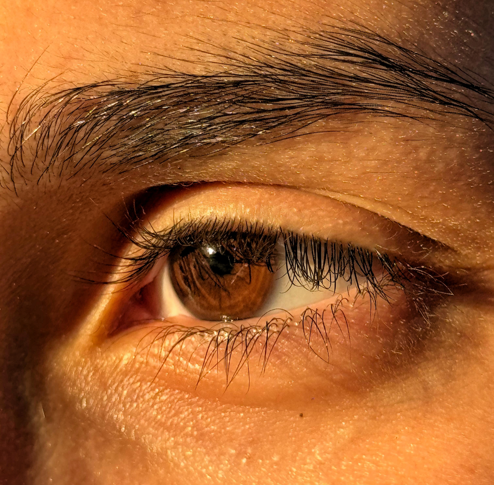
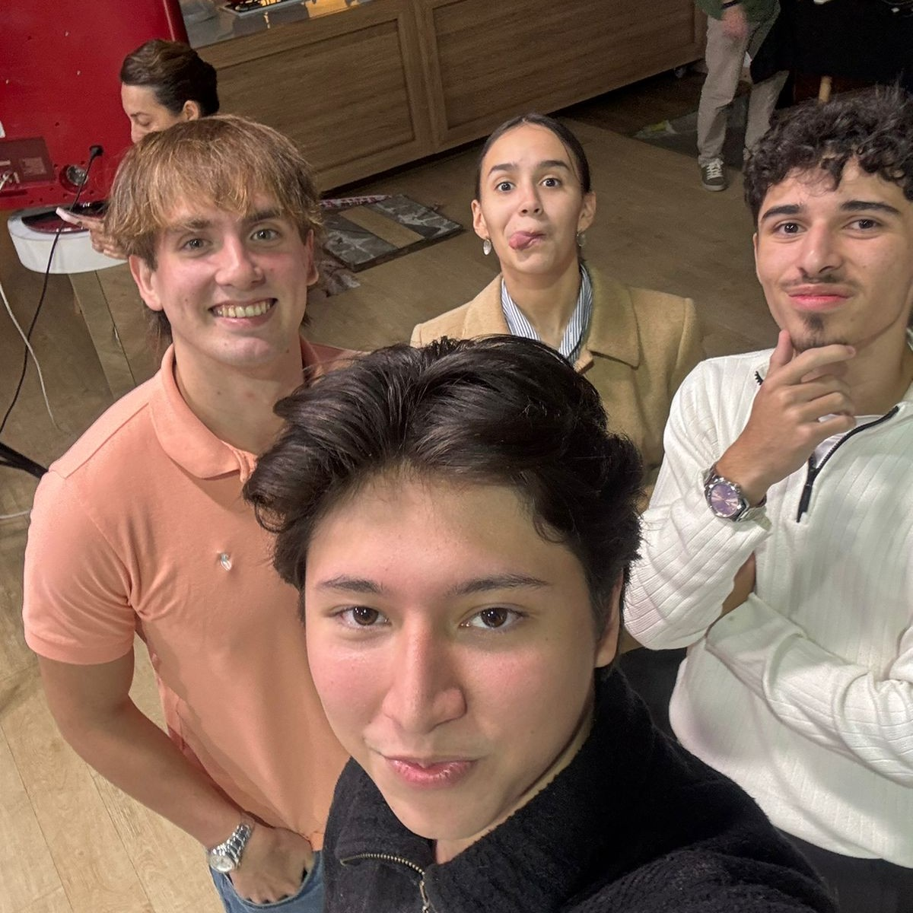
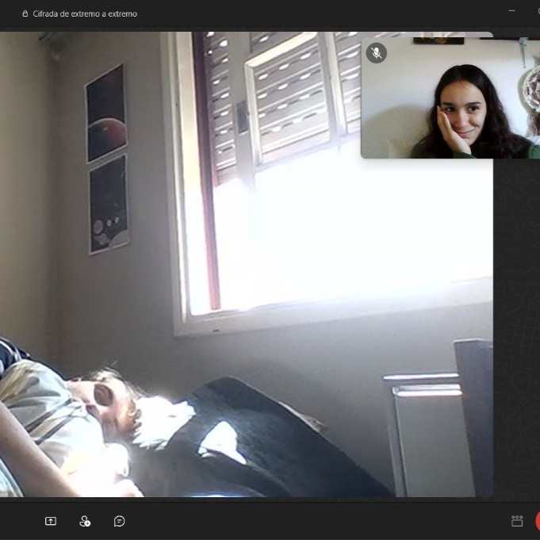
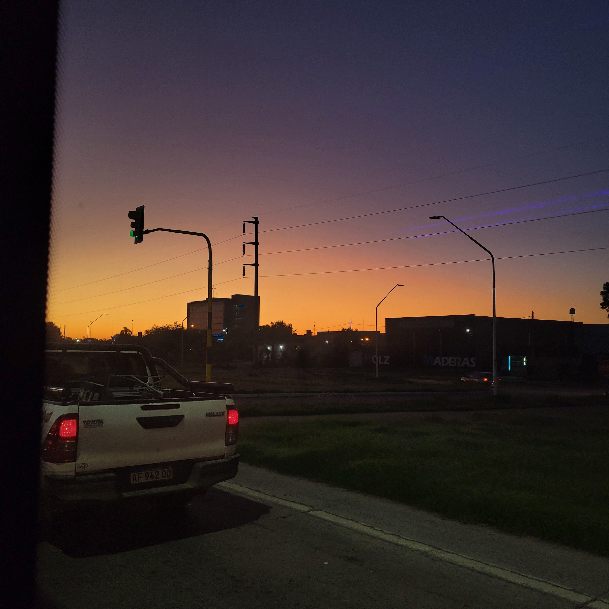
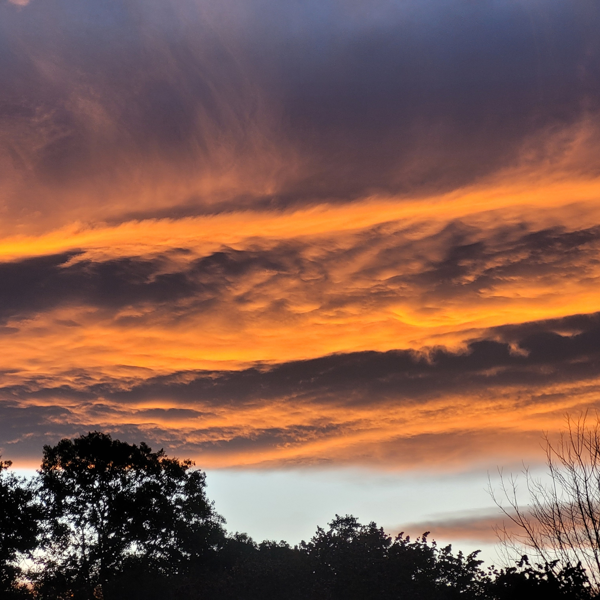
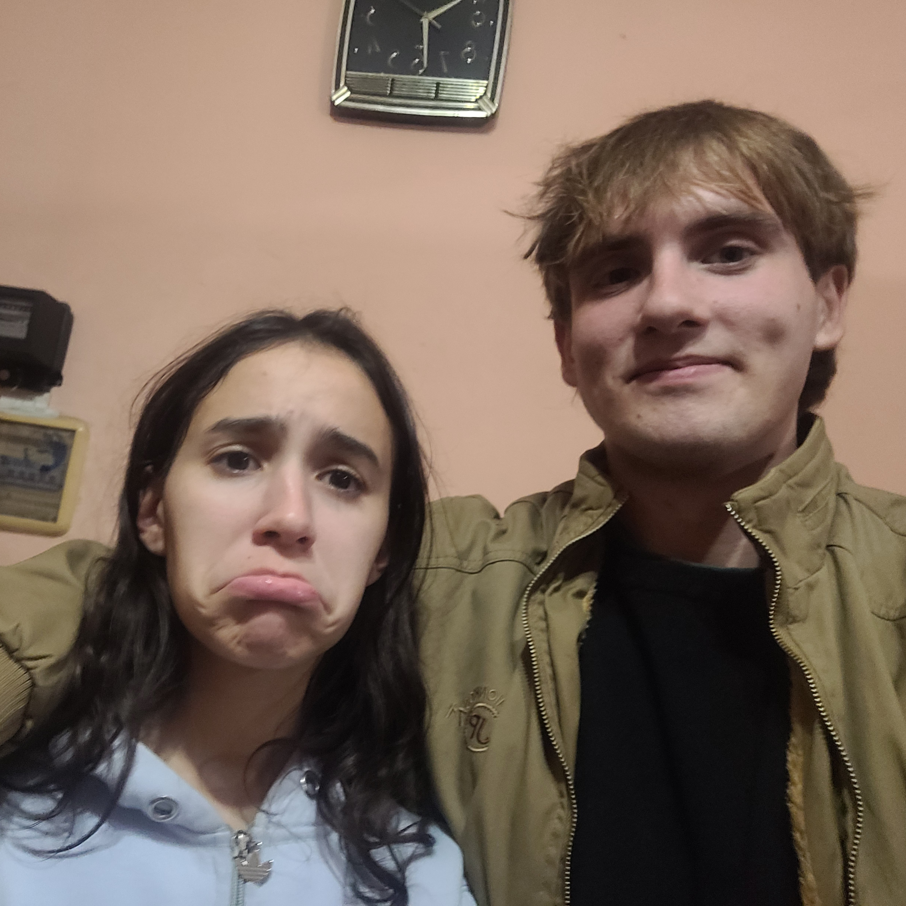

I missed you 10 days but I miss you every night. Estoy esperando la respuesta del Concejo Deliberante, la tensión aumenta y la ansiedad me liquida. Tengo que estructurar el proyecto final del curso avanzado de programación, las fechas se acercan.
27/02/2025 23:21 pm
Pienso que deberia agregar fotos a esto, sería lindo. Tengo que estudiar para poder hacerlo.Hoy fuí a correr con estas vistas, hermoso no?
Hi darling, I miss u so much today. I wanna call u, I wanna hear ur voice; if you are watching this, what are u waiting for? Call me, please. How have u been? It is everything all right? Im trying to focus on myself, experiencing new stuff. I talked to my programming teacher about our final project! It is like oportunautas, the same page I showed u. It will be a difficult project due to database concepts but I know it will be useful for our society and I wanna help people as you helped me with the Regional Student Competition.
What about my day... I am using a lot the journal, I have to film the video for EducationUSA and I am receiving my recommendation letters for the "Prof. Daniel Cordoba" scholarship. I am so excited, I hope I can get it... I just want to hug you and tell you everything. I miss you so much. I hope you are doing well. I love you.

One day I was looking around, walking down the streets... our streets. The moon was not filled but halved, like a medialuna with almibar in a cold winter. I saw you singing and dancing, telling me to join you. You were far, so far away but I recognized your eyes and your little spot right above your upper lip. I would run, walk, swim, drag myself up to you. The moon was not filled but halved, like a coffee without milk in a cold winter. I stretched my hand, I really wanted to dance with you, that really slowed jazz. You were far, so far away but I recognized your exquisite style and your dazzling smile. The moon was not filled but halved, as you, as me, in a cold winter.
Hi darling, hoy va a ser un dia largo. No tengo la mayor motivacion pero hay que seguir haciendo las cosas. Hoy tuve una pesadilla, me tiene mal el hecho que te vayas y no poder disfrutar este ultimo tiempo que te queda en Salta. Estoy muy enojado con vos, me genera mucha impotencia guardarme todo lo que siento, me genera mucha impotencia querer verte porque literalmente te vas y no me dejes hacerlo, te mentiría si te digo que entendí tus razones porque sigo sin entender nada. Espero que vuelvas pero que vuelvas con todo el amor que merezco, no con migajas. Te amo, cada vez estoy más enojado con vos.
07/03/2025 07:58 am
Another night, another nightmare. I miss you so much. Hoy tengo que enforcarme en Analisis II, tengo bastante por hacer, a las 19 tengo una clase de tres horas. Faltan pocos días para tu operación, espero que todo salga bien y que sobretodo la recuperción sea exitosa. Que tengas un lindo día, Aixa.
Gooooooood moooooooorning, beautiful day, isn't it? 15 grados, nublado + cafecito. El otoño se acerca y me pone muy feliz. Ahora en un ratito arranco a practicar derivadas parciales, que linda la matemática.
I was walking down the street (11:30 pm) and I was thinking, how beautiful is Salta, or maybe I was just thinking. I miss you babe, I really miss you. Why are you talking to me? You know I miss you.
Día muy pesado, cursando todo el día y estudiando en la biblioteca.
22/03/2025
Estuvimos todo el día juntos, la pasamos muy bien. Me hiciste compañia durante mi clase, escuchamos mucha música y cenamos ravioles en el balcón acompañados de una vela. Tuvimos un momento incómodo pero creo que supimos resolver, al menos estuvo la intención. Me hace feliz verte, no puedo creer que estemos juntos de nuevo.
23/03/2025 9:43
Hoy TIENE que ser un día pesado, tengo que hacer todo lo de la facu sin excusas:)
24/03/2025
Que día más cansador, pero me llamaste al final del día y me relajo la mente. Me contaste que te sentás en el piso de la cocina de tus tíos cuando hablas conmigo, me dió risa imaginarte. Te noto demasiado ocupada, no hablamos durante el día. Pero una llamada es todo lo que necesito.
Hoy va a ser un día muy especial, primero que nada el profe se olvidó que hoy rendíamos. La clase de probabilidad se hizo muy extensa y estoy muy cansado, pero estoy muy feliz. Tengo que ir a cenar a la casa de tus tíos, quieren estrenar la airfrier (ya veo que ninguno de los 4 sepa usarla). Encima te quedas a dormir en mi casa, un finde perfecto le llamaría. Me encantas.
05/04/2025
Ok. 5 veces en 24 horas. Almorzamos empanadas de queso, tomamos helado y mimoseamos mucho. Lo mejor? Mañana te veo de nuevo, y todo el día practicamente.
06/04/2025
Probablemente uno de los mejores días juntos, ambos la pasamos hermoso. Era el cumpleaños de vicky y terminamos hablando sobre tableros y ITM. Tan amorosos ellos dándose besos con sabor a salsa de apio y ajo, ey pero las empanadas estaban muy ricas. No puedo creer que tengas tanto amor encima. Gracias por todo lo que haces en el día a día, gracias por cuidarme tanto. Coronamos el día con un "coworking", donde vos hacias el working y yo el co-sleeping.
Hoy fuímos a ver al físico más importante de la actualidad. Al doctor Juan Martin Maldacena. Ambos coincidimos en que su charla podría haber sido mejor, pero disfrutamos mucho a nuestra manera. Luego viniste a casa y te hice la segunda con el estudio. Estamos cada vez más enamorados.
11/04/2025
Estoy recibiendo tanto amor de tu parte, me siento tan bien a tu lado. Me enamorás con cada palabra, con cada acción y con cada intención.
Me compraro un tensiómetro, esperemos que no tenga presión alta. Me genera tanto amor que me digas que me extrañas, que me pensás. Que lindo saber que es mutuo.
Todo salió como tenía que salir, defendí bien y a Pablo le encantó el proyecto. Se te nota feliz en Buenos Aires, me alegra mucho que hayas encontrado tu lugar.
Ambos rendimos hoy y a la misma hora, estamos cagados hasta las patas. Te pasaron foto del parcial del otro turno y parece que no cambia la estructura.
Update: Te cambiaron la estructura, a mis amigos les rompieron el... Esperemos que nos haya ido bien. Te extraño un montón, te amo.
29/04/2025
Finalmente nos vimos, fuí de sorpresa al aeropuerto y no te lo esperabas. Pasamos un día bello. Encima como es finde largo, me voy a Campo Santo 2 o 3 días (no se cuanto me quedo).
Evento canónico de toda pareja, mi suegra me mostró las fotos de mi novia cuando era chiquita. Look at her, my little star. Si supieras que en serio iluminas mis días como si fueras el mismo sol.
Día de la despedida, aún así nos divertimos. Gracias por tanto mi vida, haces mis días realmente mejores
04/05/2025
Hoy tuve que grabar el video para el IITA, que cansancio. Lo bueno es que nuestro proyecto va a tener un mayor alcance. Lo lindo? Es que ahora somos 2 vida mía, no hay quien nos pare.
Gracias por absolutamente todo lo que haces. Gracias por ser la mujer que sos, gracias por cuidarme tanto, gracias por ser tan atenta. Gracias por ser lo que todo un hombre desea. Me agregaron a un grupo que se llama Becas Daniel Córdoba, que miedo. Además mañana vamos a la radio. Vos ya te fuiste a dormir, yo probablemente me quede hasta tarde, encima no se sabe si hay paro de colectivo.
"Nada mata a un hombre más rápido que su propia cabeza". Frase que defendes con espada y escudo. Cuando la definición de fortaleza no resulta clara, tu presencia se asoma y demuestra. Porque tu historia lo cuenta, porque tu cabeza lo razona, porque tu persona lo respalda. La forma en la que te admiro, creo que nuestra relación se está volviendo noble.
09/05/2025
"Confiá". Confío en que estamos hechos uno para el otro, no te voy a dejar ir. Porque tantas coincidencias no pueden ser pura casualidad, porque tanto sentimiento no se genera de manera aleatoria. Porque te gustan los aviones y a mi me gustas vos, porque juntos somos. Te mereces la luna, y la medialuna, mi corazón.
Cada videollamada con vos me llena el alma, deseo tanto tenerte cerca. Deseo tanto poder ver ese lunarcito.
"Solía decir quiero morir antes de ser viejo, pero por vos podría pensarlo dos veces". Te hablo en mis sueños y no recibo respuesta, aún así tu presencia me calma. Me siento tan amado a tu lado. Es el amor que tanto quise, me siento tan afortunado de estar con vos. Jamás me hubiera imaginado que íbamos a tener una relación tan bella y tan pura.
"Lo que es para vos ni aunque te quites, lo que no es para vos ni aunque te pongas" Hoy nos miramos a los ojos fijamente, te dije que íbas a ser la mamá de mis hijos. Es como si no lo creerías, no podías dejar de sonreir. Dijiste que hoy era tu recuerdo favorito, gracias por tanto amor Aixa. Sos una persona bella, sigo enamorado como el primer día. Te amo hermosa.
Estoy muy emocionado porque mañana me te veo, me acompañas al concejo deliberante a recibir la beca prof. daniel cordoba. Me siento tan afortunado de tenerte a mi lado, me siento tan amado.
Al final viajo a misiones y no a bsas, tenía muchas ganas de viajar con vos, y más aún a tu próxima casa. Las cosas se darán como se tengan que dar, la próxima te prometo que vamos juntos. Me tiene emocionado viajar, a esta edad, solo, conociendo gente y lugares nuevos. Puedo decir que me siento afortunado de vivir esta vida. Soy feliz, y quiero que lo sepas.
21/05/2025
Estamos programando nuestro calendario porque vamos a salir en la tele!. Primer programa juntos, primer programa de muchos. Estoy muy emocionado de poder compartir esto con vos, de poder compartir mis día a día con vos, de poder compartir mis sueños y logros. Gracias por formar parte de mi vida, gracias por ser vos.
22/05/2025
No solo vamos a la tele, hoy tuvimos una reunión con la directora de mi colegio para empezar a dar charlas sobre nuestro proyecto. Lamentablemente nos fuimos con ganas, queríamos formalizar y solo terminamos hablando de problemáticas. Pronto se dará, no hay que desesperarse. Juntos, en las buenas y en las malas, juntos.
23/05/2025
Finalmente, en la tele, expectacular día. Hablamos muy bien, nos sentimos cómodos y nos divertimos mucho en el set. Los chicos estaban muy nerviosos, nosotros estabamos en la nuestra jajaja. Solo voy a dejar una foto de recuerdo, porque no hay nada mejor que vernos juntos, felices y disfrutando de lo que hacemos.

Que raro ella, acompañándome en mis pachorras. Hoy voy a estudiar lo máximo que pueda para poder sacar la mejor nota. Me siento motivado y vos me dás aún más motivación. Me tiene ansioso el viaje, será mi primer encuentro con YFU como voluntario. Y si dejas un ratito todo y venís conmigo? Te aseguro que nos vamos a reír mucho

Por suerte el viaje no se hizo demasiado largo, paisajes bellos y alguna que otra llamada. Los chicos parecen super amables, son todos simpáticos. Al parecer vamos a estar todos los días, todo el día haciendo cosas. Espero poder llegar a estudiar al menos un poquito para no atrasarme demasiado con la facultad.

El clima está excesivamente frío. Lo único que podria calentar mi alma, tu mirada. Nuestra mirada eterna, y aunque no te vea siento que lo hago. Imaginarme tu día, lo que estás haciendo en este preciso momento, lo que estás sintiendo. Es un pensamiento profundo, pretender ser capaz de pensar en un futuro perfecto cuando ambos somos personas, seres con immperfecciones. Gracias mi gran amor por formar parte de esta mirada eterna.
03/06/2025
Totalmente destruído, enfermo y sin dormir. Estos exámenes me tienen loco, hasta tu voz se siente ansiosa cuando te cuento. Los dos vamos a salir adelante, no hay que desesperarse.
04/06/2025
Hoy el cielo se parece a vos más que nunca, la calidez de tu mirada y tus besos junto con la profundidad de tus pensamientos.

05/06/2025
Se enfermó la nena y me llevó a que la acompañara a las 10:30 de la noche para que le pinchen. Lo feliz que me haces corazón de melón. Amo que seas mi novia, amo que seas tan caprichosa.

06/06/2025
Hoy viajas para Buenos Aires, te voy a acompañar al aeropuerto. A aprobar esos dos ultimos examenes, se vienen nuestras vacaciones y yo ando muy pollera así que espero que todo salga bien. PD: Un pequeño dato curioso de hoy, re contra garchamos en la sala de servicios de ascensores del edificio y se sintió mooooy bien. Me encantas